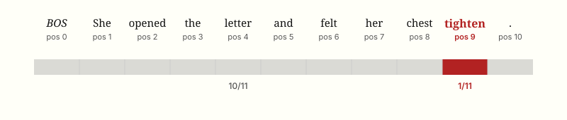
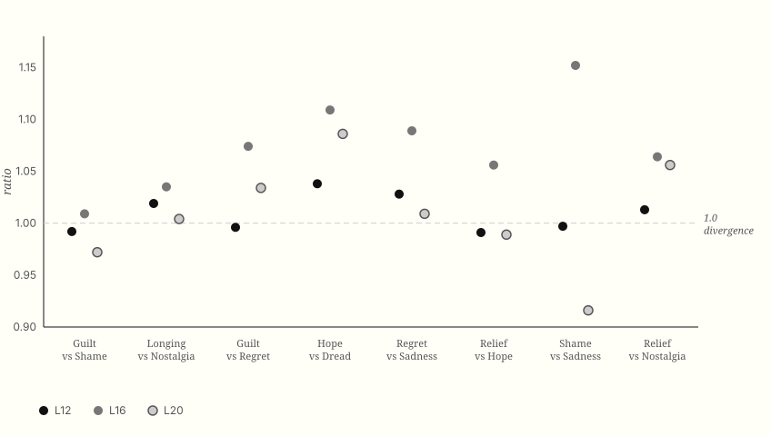
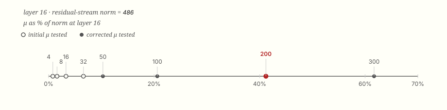

0. The Question
As humans we have the fortunate, and often overwhelming, condition of feeling emotions. Guilt, hate, joy. We feel them through the body and express them with language: butterflies in the stomach, skin prickling, a slight buzz. There's a good chance you understand immediately what experiences and sensations these are referring to. But do language models? With the rise of LLMs, in their capabilities and their use as confidants and companions, this question has become even more intriguing. Just as we've built language models that develop semantic understanding through attention mechanisms — allowing each word to gather meaning from its context (Vaswani et al., 2017) — and found them to represent abstract concepts as directions in activation space (Sofroniew et al., 2026), can we find how they structure something like human emotion? Or is "emotion" to a model nothing more than surface-level pattern completion? And if real structure exists, as in, if a model can somehow separate guilt from shame the way it separates a noun from a verb, is that structure grounded in something like bodily experience, the way psychologists propose it is for us, or is it just pattern-matching linguistics with nothing underneath?
Answering this proved to be much less straightforward than expected. Multiple, seemingly reasonable, approaches led down winding paths to nowhere early on. Language models, even small ones, have vast internal "representational" spaces, and while many tools exist to label what's found there, mapping something like "emotion" in this great unknown is an adventure. As you'll see, the labels these tools produce require proper, extensive nuance and verification to claim insights from. In this writeup, we’ll go through the various tools we used to try and understand emotion in this space, how we narrowed down to understand one emotion deeply, and why some maps performed very well, while others may have looked at the world wrong from the start.
Initially every method here looked solid, only to then break under a second look. CAA's similarity matrix was reading sentence structure instead of emotion. Logit Lens's divergence number didn’t hold up next to a neutral control. The SAE filter's surviving candidates were mostly tracking how the corpus was written, but not what it meant. Steering almost failed outright because the first multiplier was thirty times too weak. Pearson's correlation matrix turned out to be borrowing most of its signal from one shared connection. The intriguing part was that most of this process wasn’t planned, with each check being motivated by the last result feeling slightly off. What's left after all of that is six causally verified features, organized as a chain rather than a cluster, with a body-language signature that leans toward shame more than guilt, all of which survived our constant attempts to break them.
1. Phase 1: Contrastive Activation Addition
We initially started with contrastive activation addition (CAA): a simple method for extracting concept directions from a model's activation space [Turner et al. 2023] by subtracting the mean activations of a model running a wanted and an unwanted behavior. The appeal for this method was the directness and straightforwardness it provided. CAA was originally designed for contrasting behaviors, and we adapted it here as a concept-discovery tool, contrasting passages containing emotion (of any sort) against a neutral baseline in place of an opposing behavior. The thinking was simple: if we find the activations of a concept and of a neutral baseline, the difference in means should point toward the concept in activation space. For a question as open-ended as "do emotional concepts have geometric structure," the simplest tool seemed like the right place to start. It's like using a stick and its shadow to find direction instead of building a compass.
For the implementation, we built a similarity matrix across 8 distinct emotion vectors (joy, anger, sadness, dread, awe, nostalgia, guilt, hope) and measured cosine similarity by pair, found through
dread_vector = mean(dread_activations) - mean(neutral_activations):
cos(𝜃)=𝑣1⋅𝑣2∣∣∣∣𝑣1∣∣∣∣,∣∣∣∣𝑣2∣∣∣∣
1.0 means the vectors point in identical directions, 0.0 means they're unrelated, and -1.0 means opposite directions. If emotions are geometrically distinct, such as joy and dread (which are about as far apart as two emotions can be), then they should point in very different directions, indicating low cosine similarity. What we found instead was:
joy ↔ dread: 0.921 | anger ↔ sadness: 0.874 | guilt ↔ hope: 0.978
Every pair landed between 0.87 and 0.99. Joy and dread were nearly identical. Guilt and hope, nearly identical. Geometrically, we found that every emotion vector pointed in almost the same direction.
We believe there are two compounding reasons for these methods to not have worked as expected. First, a setup issue. For a method like this to be successful, the neutral baseline needs to be stylistically matched to the emotion passages, and we suspect the resulting vectors capture stylistic differences in the writing at least as strongly as, if not more strongly than, the underlying emotional content. Second, this could also be due to sequence averaging. We get into that next.
2. Phase 2: The Somatic Minimal-Pairs Corpus
The fix we eventually landed on was building sentences around somatic metaphors: figurative phrases that link emotional states to specific bodily sensations, like “chest tightening” or “hands going still” (Barrett, 2017). Somatic metaphors work better for this because they carry the emotion without ever naming it, which makes them useful for finding exactly where in a sentence the emotional signal sits.
Take one: "She opened the letter and felt her chest tighten." Eleven tokens, and the part that's actually doing the emotional work (the dread , or “unease” if you’d like) lives entirely in "tighten," which is just one token, at position 9. Everything else around it is neutral. Our corpus had kept passages to roughly this length, on the assumption that the emotional signal lived in a single token, but what we found was that averaging activations across all eleven positions dilutes that one token down to about 1/11th of the resulting vector. The other 10/11 is just "a sentence about someone feeling something in their body," and that's nearly identical whether the sentence is about guilt, hope, or anything else. CAA was reading the shared skeleton of these sentences instead of the emotion itself.

For initial testing with CAA, we used specific minimal pairs rather than the full corpus:
For example,
Hope: "She opened the letter and felt her chest lift."
Dread: "She opened the letter and felt her chest tighten."
Save for the one token at position 9, these sentences are identical, and whatever difference exists between them would live entirely at that one word, ideally making it easy to pinpoint exactly where to look for an “emotion-driven” activation. CAA still couldn't find it, returning 0.98+ similarity across all 26 layers.
The full corpus followed a controlled template:
[agent] + [action] + "and felt" + [body part] + [somatic verb]:
| Concept | Somatic Signal | Why |
|---|---|---|
| Guilt | hands go still | instrument of the act |
| Shame | face go hot | social surface |
| Relief | shoulders fall | tension releasing downward |
| Hope | chest rise | expansion toward |
| Longing | throat close | reaching, blocked |
| Nostalgia | chest fill | passive flooding |
| Regret | stomach sink | returning to the act |
| Sadness | eyes fill | dissolution inward |
This way, the somatic signal is also the exact position we look for activations.
While building this out, there were two important design choices. First, every sentence shares the same structure, where the emotion-signal word always sits at the same position, with no supporting emotion-label words appearing before it. Second, no sentence ever names the emotion outright, with the body language having to carry it alone. Labeling emotions outright is hard, and somewhat arbitrary at the edges -"dread" and "unease" point at nearly the same thing, conceptually, for our purposes.- so a phrase like "hands go still" implies guilt, or something close enough to it, without spelling it out.
Writing one good sentence like that by hand for each emotion is one thing, but doing it at scale is another. We used Claude Sonnet 4.6 to generate 15-20 somatic metaphors per emotion, prompted to follow the defined structure (with freedom on exact verbs and vocabulary) and anchored to a hand-picked example corpus drawn from a range of literature, mostly children's books for simplicity, alongside more abstract passages from popular literature. At scale, this turned out to 160 sentences, 8 concepts, 20 sentences per concept, 4 concept pairs.
3. Phase 3: Logit Lens
These results raised an important question. If emotional concepts truly differ, why did CAA fail to detect them? Was the model collapsing emotional representations into a shared direction, or was our measurement masking distinctions that still existed internally? Answering that meant finding a tool capable of inspecting representations directly, rather than averaging them away.
CAA operates at the macro level: it's a behavioral intervention, asking whether the model's output can be moved in a given direction. Logit Lens, a well-known technique used to observe a models’ intermediate layers, operates at the micro level: a representational probe, asking what's encoded at one specific position, at one specific layer, independent of any output. While CAA needs averaging across a sequence to construct its direction, Logit Lens needs neither steering nor averaging. Rather, it directly reads the residual stream at a single token and a single depth.
How the residual stream works
The residual stream is the transformer's central communication channel. For any input sequence, every layer produces a representation for every token position, and as the model moves layer to layer, that stream of representations gets progressively built up, with each layer adding to what came before.
In standard operation, a transformer produces its final prediction by mapping the last layer's residual stream into vocabulary space by projecting the final representation r through the unembedding matrix W_U (which maps embeddings back into vocabulary tokens) to produce logits across the entire vocabulary:
At the final layer, this is just the model's ordinary next-token prediction. Logit Lens (Nostalgebraist, 2020; Belrose et al., 2023) reuses this same operation at any earlier layer l, asking: what would the model predict if computation stopped right here? That's how a continuous hidden state at any token position, at any layer, gets translated into a human-readable distribution over vocabulary.
Why this fixes the dilution problem.
Recall CAA's core flaw: we derived the emotional steering vector by averaging hidden states across every token in the sequence:
(where $h$ is the hidden state and $N$ is the token count)
In an 11-token sequence where only one token carries the emotional signal, this operation heavily dilutes the signal by blending it with ten tokens of neutral, structural context.
Logit lens, while also combining information, avoids the averaging problem specifically. Instead of collapsing the whole sentence into one vector, it isolates the residual stream at one exact point and one exact depth, with the point being the token position and the depth being the layer. It combines depth-wise at a single token, rather than breadthwise across all of them. By targeting the exact token position where the emotional signal is introduced, the dilution effect disappears. There's no mixing with surrounding grammar or averaging across the sequence. It's like going from a blunt, sequence-wide measurement to a precise, token-level, specific one.
The extraction loop.
For each minimal sentence pair in our corpus — Concept A vs. Concept B — we ran the following:
Tokenize: convert the raw text into model inputs — tokens = tl_model.to_tokens(sentence), shape [1, seq_len].
Forward pass with cache: run the text through the model while saving every intermediate activation: _, cache = tl_model.run_with_cache(tokens).
Extract the emotional token position: given our rigid template, this is always the second-to-last token — pos = seq_len - 2.
Apply logits at each layer L: extract the residual stream vector at that position, project to vocabulary space, take the top prediction:
r = cache["blocks.L.hook_resid_post"][0, pos, :] — shape [2304]
logits = r @ W_U — shape [256000]
top_token = argmax(logits)
Compare Concept A vs. Concept B: for each sentence pair, sharing near-identical structure save for the emotion-inducing token, check whether the top predicted token at layer L matches. If the tokens differ, the representations have diverged. If they match, they've converged.
The metric. To quantify this across the dataset, we used a strict top-1 comparison: at each layer, did the two sentences in a pair predict the same top token or not. We averaged this across the 20 sentence pairs in each concept pairing to get a single divergence rate per pair, per layer.
This is designed to be an "un-refined" metric. A binary top-1 comparison doesn't capture partial similarity across the full vocabulary distribution, and KL divergence or cosine similarity over the full logit vectors would be more rigorous. We chose top-1 specifically for its interpretability: it grounds the measurement in a concrete, observable thing the model is prioritizing at that depth, rather than an abstract distributional distance.
4. Phase 4: Results, Corrected
The qualitative signal.
At layer 12 - roughly the midpoint of Gemma-2-2B's 26 layers, and also within what's generally considered the model's semantic processing phase - the model's top predictions at the emotion token position are pretty interesting:
| Emotion | Target word | Layer 12 top prediction |
|---|---|---|
| Guilt | "still" | 躇 (Japanese: "hesitation") |
| Shame | "hot" | "blushing", "ashamed" |
| Hope | "lift" | "relieved", "lifted" |
| Dread | "tighten" | "dropping", "against" |
What we found were results that look to be more than just simple structural representations. While the target words themselves are physical -"still," "hot," "lift," "tighten"- the model's top vocabulary predictions are emotionally coherent on top of that physicality: shame's heat predicts "blushing," hope's lift predicts "relieved," and guilt's stillness predicts "hesitation." At this layer, the residual stream at the emotion token appears to preserve information correlated with more than just local syntax.
One caveat, however, is that a later, corrected re-run of this same extraction uncovered a real artifact in three of nine tested emotions. Gemma-2-2B's middle layers, like many transformer models, contain a small number of high-variance "rogue dimensions" that can dominate raw logit-lens projections (Belrose et al., 2023, citing Timkey & van Schijndel, 2021), which in our case manifested as archaic-spelling tokens ("againſt," "becauſe"). Hope, Dread, and Regret were partially or fully affected by this in the corrected run. Guilt, Shame, Relief, Longing, Nostalgia, and Sadness were not. So, the table above should be read as six clean hits and a few that need the artifact noted alongside them, not nine uniformly clean results.
The original divergence finding, and why it doesn't hold up.
When we first plotted divergence rate across network depth, every concept pair showed 90-100% divergence through layers 0-16. At face value, this is evidence that the model maintains separable representations for each emotion early on, which we initially read as a real, structural finding. Furthermore, the convergence pattern that followed (different pairs collapsing toward shared predictions at different rates after layer 16) seemed to track something meaningful about how closely related the underlying emotions were.
However, it doesn't hold up. The problem is that this measurement never asked by how much two emotion-pair sentences would diverge from each other just by being two different sentences, independent of their emotional content. Without that baseline, a 90% divergence rate is ambiguous. It could mean "guilt and shame are represented distinctly," or "any two different sentences diverge 90% of the time at this layer, regardless of what they're about," or something else entirely. There's no way to tell which from looking at the number alone.
A corrected re-run fixed this by adding a matched neutral control for each emotion, plus an explicit verification step we'd missed the first time (confirming the model's own final-layer normalization was being applied before projection). For each emotion pair, we computed relative divergence: emotion-vs-emotion JSD divided by the average of each emotion's own divergence from its matched neutral baseline.
| Pair | L12 ratio | L16 ratio | L20 ratio |
|---|---|---|---|
| Guilt vs Shame | 0.992 | 1.009 | 0.972 |
| Longing vs Nostalgia | 1.019 | 1.035 | 1.004 |
| Guilt vs Regret | 0.996 | 1.074 | 1.034 |
| Hope vs Dread | 1.038 | 1.109 | 1.086 |
| Regret vs Sadness | 1.028 | 1.089 | 1.009 |
| Relief vs Hope | 0.991 | 1.056 | 0.989 |
| Shame vs Sadness | 0.997 | 1.152 | 0.916 |
| Relief vs Nostalgia | 1.013 | 1.064 | 1.056 |

Every ratio sits between 0.92 and 1.15. A ratio of 1.0 would mean an emotion pair diverges from its partner no more than it diverges from neutral text alone. Every single measured pair lands close enough to 1.0 that none of them show meaningfully more separation from each other than they each independently show from a neutral baseline. The original 90-100% divergence finding wasn't exactly false, rather, it was measuring something real, (these sentences are different from each other), without the control needed to tell whether that difference had anything to do with emotion specifically.
The layer-12 qualitative hits are real and reproduced, but the quantitative claim that emotions occupy separable regions of activation space, built on raw divergence rate alone, however, is not supported once a proper baseline is applied.
Phase 6: The SAE Filter
Two methods had now failed, both for the same underlying reason: superposition. A model's internal state at any layer and token is a vector of raw numbers, 2,304 of them, and the model crams far more concepts into that space than it has room for, forcing them to overlap. This is what CAA's averaging compounded, and what produced Logit Lens's rogue-dimension artifacts.
A sparse autoencoder addresses this directly: an encoder and decoder, trained to re-express that crowded 2,304-number vector in a much larger, mostly empty 16,384-number space, where individual concepts have room to separate. Concretely:
The sparsity constraint forces the small number of active slots , which are somewhere around 70-80 out of 16,384 in practice, to each become a specific, reusable detector rather than a vague, redundant one. The decoder reverses this:
Training is the repeated process of narrowing the gap between $\hat{r}$ and the real $r$ across millions of real activations, while keeping $f$ mostly zero throughout. This is also why it matters to verify what each of these 16,384 numbers is actually doing, rather than assuming. The entire research question depends on being able to point at one specific number and say: "this is guilt, not guilt-blended-with-something-else."
We used GemmaScope (Lieberum et al., 2024), a sparse autoencoder pretrained for Gemma-2-2B and released by DeepMind, accessed through SAELens. We tested layers 12, 16, and 20, following Shu et al. (2026)'s three-phase model of emotion processing, where layer 12 is roughly semantic, layer 16 a transition, and layer 20 emotion-specific.
Filtering 16,384 candidates down to something testable
Three layers, 16,384 features each, means roughly 49,000 individual feature-checks, which was.... far too many to test by steering one at a time. We needed a cheap, automatic way to narrow that pool before spending any real compute on causal verification.
For a feature i and a sentence set S, then, define:
(max-pooled across token positions, with the BOS token and padding excluded). From there, four numbers per feature:
- $\text{differential}(i) = P_{target}(i) - P_{neutral}(i)$
- $\text{dominance}(i) = P_{target}(i) - \max(P_{\text{other emotions}}(i))$
A feature survives only if it clears four thresholds: minimum target firing rate, a maximum neutral firing rate, a minimum differential, and a minimum dominance. This was our own construction to try and narrow down the results based on common discrepancies that kept coming up.
The filter's four checks, and why they weren't enough
Each of the four checks above was built to rule out one specific way a feature could look promising without actually meaning anything: a feature that fires on nearly everything (caught by the target/neutral split), a feature with no real gap between target and baseline (caught by differential), a feature that's just a generic "this is emotional" detector firing equally across several different emotions (caught by dominance). Each rule answers a real failure mode.
Running this against guilt, dread, and relief across all three layers, 502 features survived roughly 49,000 checked, a real result, but barely narrower than picking at random. The four checks, individually reasonable, weren't enough together: they can only measure statistical association with how sentences happen to be labeled, not whether a feature tracks the underlying concept those labels are pointing at.
To really believe this we had to confirm this directly. Running a Pearson correlation across all surviving guilt candidates surfaced two features, 12579 and 13615, correlating at roughly 0.74, and this seemed high enough to look like a real, paired relationship. Pulling each feature's actual top activating tokens from Neuronpedia (the real words from real text that make a feature fire most strongly, independent of whatever summary label sits on top of it), told a different story:
| Feature | Label | Real top tokens |
|---|---|---|
| 12579 | "opinion/subjective evaluation" | quite, pretty, very, rather, promising, fairly |
| 13615 | "emotional expressions" | felt, Felt, feel, feels, feeling |
| 09542 | "specific terms related to scientific or medical concepts" | 脚註の使い方, feel, featureID, aarrggbb, feel, Feel, PerformLayout, Feels |
| 14602 | "expressions of apology and self-deprecation in communication" | 脚註の使い方, SourceChecksum, Autorizaciones, riwal, invokeLater, WaitGroup, dafx, myself |
Neither token list has anything to do with guilt specifically. 12579 is a hedge-intensifier detector. 13615 fires on the literal verb "feel," in any context. The two correlate with each other not because they share an emotional concept, but because hedge words and "felt"-constructions plausibly co-occur often in how our guilt corpus happens to be written , and this points to a stylistic pattern instead of a conceptual one. (Note: this is the inferred mechanism behind the correlation, based on the two features' real token content; it isn't a claim that any specific sentence containing both was pulled and checked.)
Two more candidates compounded the same lesson. A feature labeled "scientific/medical concepts" turned out to be a second, independently discovered hidden copy of the same "feel"-verb pattern as 13615, mislabeled completely differently despite tracking the same thing. A feature labeled "apology and self-deprecation" had real top tokens that were mostly code fragments and the word "myself," although, despite a plausible-sounding label, it was not an apology detector at all.
A separate, text-only diagnostic confirmed why this kept happening. We used TF-IDF (a statistic measuring how important a word is to a document within a corpus) vectorizing the same corpus built in Phase 2 and comparing within-category to between-category similarity, with no model involved at all. Guilt and shame sentences in the generated corpus shared roughly 90%of vocabulary with each other as they did within their own category. The categories were never cleanly separated at the level of raw word choice, before any model representation entered the picture. Garbage in, garbage out.
The lesson generalizes beyond these specific cases: an automatically generated label tracks surface-level stylistic co-occurrence in the corpus, not the underlying conceptual geometry the label claims to describe. Trusting it without reading the real tokens a feature responds to would have meant building the rest of this project on noise, which is partly why every candidate that made it to causal steering in Phase 7 was checked this way first, with several of them turning out to be real.
A scope note. Every method up to this point, whether it be CAA or the two Logit Lens runs, was tested across the full range of emotions we started with, and none of them found anything emotion-specific to choose between. The SAE filter is the first method granular enough to produce individually nameable candidates rather than one aggregate number. Once that pool existed, guilt candidates were the richest. From here through the end of this writeup, everything is focused on guilt alone. This isn’t because guilt is uniquely interesting among emotions, but because this is where the pipeline produced something interesting and manageable that we wanted to truly go deep on.
7. Phase 7: Causal Steering
Everything up to this point — the Logit Lens, the SAE filter, the token-reading checks — only ever measured association. A feature firing reliably whenever guilt text appears tells you it co-occurs with guilt. It doesn't tell you whether the feature represents guilt, merely correlates with something that happens to ride along with guilt in this particular corpus, or represents guilt's cause rather than the feeling itself. It’s like saying a cake you found really sweet is because of the sugar you saw listed in the ingredients, instead of making different cakes with different amounts of sugar, or different ingredients, and tasting how sweet they are. All three possibilities produced the same observable signature, but no amount of watching can tell them apart.
The only way to test which one is true is to intervene. We do this by forcing a feature active on a sentence that has no textual reason to involve guilt at all and see whether guilt-related content shows up anyway. If the feature is just a bystander, correlated with guilt by accident of corpus styling, the way 12579 and 13615 turned out to be, forcing it on should do nothing because there was never anything guilt-specific encoded in it to begin with. If it is real, forcing it on should produce guilt-shaped content even with zero supporting evidence in the prompt (because you've activated the feature’s causal role rather than waited for the right words to trigger it).
Mechanically, this means directly editing the model's residual stream while it's generating text, and “injecting” a feature into it:
$d_i$ is the feature's decoder direction, pulled straight from the SAE's $W_{dec}$, and confirmed to be unit length. $\mu$ is a scalar multiplier controlling how much of that direction gets added in. $r'$ becomes the model's new internal state at that position, used in place of $r$ for the rest of generation. Every steered run was checked against the same procedure, on the same prompt, using a different, randomly selected feature's direction at the same $\mu$. This way, any output change had to be attributable to the specific feature being tested.
A units bug
The first attempt at this used $\mu \in \{4, 8, 16, 32\}$. These values seemed reasonable, but were chosen without checking what they actually meant relative to the model's own internal scale. They produced nothing, with the steered outputs looking indistinguishable from the random control. But before concluding the features didn't work, we checked the actual size of the residual stream itself. Measured directly, Gemma-2-2B's residual stream at layer 16 has an average norm of roughly 486; at layer 20, roughly 600. The relevant quantity isn't $\mu$ on its own, but $\mu$ relative to that native scale:
At $\mu=16$, layer 16: $\rho \approx 0.033$. The intervention was adding only about 3.3% of the model's own typical signal magnitude. Not really steering; that's a whisper lost inside a much louder existing signal. A real, working feature would look exactly as indistinguishable from a fake one at this strength, simply because neither was given enough room to do anything. The corrected range was much greater: $\mu \in \{50, 100, 200, 300\}$, chosen to inject somewhere between 10% and 60% of the residual stream's measured norm.

Reading tokens before spending compute
Two features (13305, 11883) had already shown a real, well-supported correlation worth testing first. Beyond those, rather than guessing which of the remaining ~60 candidates were worth the GPU cost of a steering run, every one was read directly: real label, real top-8 activating tokens, no exceptions. Most were confirmed junk by the same label-versus-token mismatch pattern already established in Phase 6. A handful were real, but entirely unrelated to guilt (love, pride, secrets) and set aside. Seven were judged genuinely on topic enough to warrant a steering test.
Results: six verified, two informative negatives
At corrected $\mu$, six of the seven candidates produced guilt-or-adjacent content reliably, beating the random control every time:
| Feature | Layer | Label | Steered output (at corrected μ) |
|---|---|---|---|
| 13305 | 16 | expressions of remorse, requests for forgiveness | "He looked out the window and said sorry, immediately admitting his mistake. He showed how guilty he was..." |
| 11883 | 20 | apologies, requests for forgiveness | "He looked out the window and apologized for his apology... 'I'm sorry I'." |
| 8567 | 12 | regret, realization of mistakes | "He looked out the window and regretted it and he wanted to kick himself." |
| 15551 | 16 | reflection, hindsight, gratitude | "It was the one thing he had regretted, but now he wished he..." |
| 11182 | 12 | legal proceedings, plea agreements | "...pleaded guilty to 28 counts." / at lower μ: "showed the same expression of guilt and remorse" |
| 5932 | 12 | transparency and honesty in communication | "told me how she was ashamed of what she had done" / "I'm sorry... We're going to work with you." |
In every case, the random-feature control on the same prompt at the same $\mu$ produced unrelated content, ( Ferraris, snow, a cold fog, a horror-movie scene), confirming the effect was specific to the feature being tested and not an artifact of perturbing the residual stream at all.
Two candidates failed, and the failures are worth keeping, because they're informative in different ways. Feature 06230 had the literal words "guilt" and "Guilt" among its real top tokens. This was the single most promising-looking candidate in the entire pool by raw token content alone, yet steering it produced only generic anxiety and rumination, no clearer than the random control. A feature having exactly the right word among its top tokens doesn't guarantee it causes corresponding behavior. Feature 02746 produced no guilt or shame content at any strength tested, and by the highest $\mu$, both it and its random control degenerated into unrelated repetition, reading as a generally unstable direction rather than a real, contained feature.
A third candidate, feature 14528, with a label of "feelings of guilt and sorrow", was included deliberately as a hard test case rather than a confident lead. Its top tokens, however, were ambiguous (comfortable, secure, safe, compelled). The random control feature became unstable at high μ, producing garbled output that made the comparison unreadable. Unlike 02746, which was a clean negative, 14528 is inconclusive, as the experiment couldn't distinguish between "this feature doesn't work" and "the control happened to break at the same strength."
Checking the original two features under resampling
Before treating 13305 and 11883 as settled, we checked whether their observed firing rates on the narrative corpus were stable or whether they could plausibly have come out differently with a slightly different sample of sentences. Resampling each feature's per-sentence fire record with replacement 10,000 times and taking the middle 95% of the resulting rates gave a 95% confidence interval of [0.680, 0.845] for 13305 and [0.660, 0.835] for 11883. These results were both narrow and both stable. The same resampling has not yet been run on the four newer features' narrative fire rates, though, as the next section shows, all six features' somatic fire rates have already been checked this way.
8. Phase 8: The Somatic Test
Six features had now survived causal verification on narrative text — text with a setting, an agent, a small story building toward the body's response. The question was whether this generalized beyond narrative, or whether these features were only ever picking up on something specific to stories about guilt, rather than guilt's bodily signature itself.
The corpus for this phase, despite also focusing on somatic metaphors, is different from Phase 2's. Phase 2's sentences wrap every somatic signal in a small narrative that consists of a person, a situation, and then the body's response. "She opened the letter and felt her chest tighten" has a person and a situation doing real work alongside body language. This corpus strips that structuring wrapper away entirely, leading to: Twenty handwritten guilt sentences, twenty handwritten shame sentences, using the same body-part-and-verb vocabulary, but without an agent, action, or setting. Just the isolated sensation, with nothing else for the model to draw on.
If the six features only fire reliably when a story surrounds the body language, that suggests they're tracking "guilt narrative" more than guilt's bodily signature specifically. If they still fire with the wrapper gone, that's evidence they generalize beyond the text style they were found in.
Method. Identical to the SAE filter's per-sentence fire-rate logic from Phase 6, applied to this new isolated corpus instead.
Initial result. Five of the six verified features fired more often on shame's body-vocabulary than on guilt's own. The mapping itself was chosen by hand — guilt to "hands go still," shame to "face go hot" — based on human intuition about which bodily sensations match which emotions, so it's possible that some amount of the guilt/shame overlap in these results may already be present in that design choice, even before the model ever saw a sentence. What this test can show is how the verified features respond to this specific, human-chosen body-language vocabulary.
| Feature | Label | Guilt-somatic rate | Shame-somatic rate |
|---|---|---|---|
| 13305 | remorse, requests for forgiveness | 0.400 | 0.550 |
| 11883 | apologies, requests for forgiveness | 0.450 | 0.900 |
| 8567 | regret, realization of mistakes | 0.450 | 0.550 |
| 15551 | reflection, hindsight (also: gratitude) | 0.500 | 0.450 |
| 11182 | legal proceedings, plea agreements | 0.200 | 0.150 |
| 5932 | transparency, honesty in communication | 0.050 | 0.250 |
Feature 15551 is the sole exception, leaning guilt rather than shame, though only slightly.
The six features' labels — remorse, apology, regret, confession, surrender, disclosure — describe what someone does or says after having done something wrong, rather than what guilt feels like from inside. When stripped of narrative context, those same features recognized shame's body language more reliably than guilt's own.
Checking whether this holds up statistically.
A 20-sentence sample is small enough that a difference in point estimates alone could plausibly be noise. Bootstrap resampling each feature's fire record 10,000 times and taking the middle 95% gives:
| Feature | Label | Guilt-somatic 95% CI | Shame-somatic 95% CI | Overlap? |
|---|---|---|---|---|
| 11883 | apologies, requests for forgiveness | [0.250, 0.650] | [0.750, 1.000] | No |
| 13305 | remorse, requests for forgiveness | [0.200, 0.600] | [0.350, 0.750] | Yes |
| 8567 | regret, realization of mistakes | [0.250, 0.650] | [0.350, 0.750] | Yes |
| 15551 | reflection, hindsight (also: gratitude) | [0.300, 0.700] | [0.250, 0.650] | Yes |
| 11182 | legal proceedings, plea agreements | [0.050, 0.400] | [0.000, 0.300] | Yes |
| 5932 | transparency, honesty in communication | [0.000, 0.150] | [0.050, 0.450] | Yes |
Only feature 11883 shows a non-overlapping gap between guilt-somatic and shame-somatic firing. The other five show numerically higher shame rates, but n=20 per category isn't enough to call that difference statistically real for any of them. One of six shows a defensible somatic lean, and this is the one that turns out to be the structural hub.
9. Phase 9: Pearson vs. Ising
Now we have six features, individually verified as causally real. This doesn't tell us that they form one “coordinated structure” rather than six unrelated, separately functioning mechanisms that happen to all relate to guilt's aftermath. Answering that would mean looking at how the six relate to each other, and not just to guilt.
First pass: Pearson correlation. For two features $i, j$, across every sentence in the narrative corpus, with each feature's fire/no-fire record treated as a binary signal:
This asks one simple question: across all sentences, do these two features' fire records move together? Running this across all 15 pairs among the six verified features, every single pair came back positive with a signed cohesion of 1.000. At face value, this reads as one tightly bound cluster: all six features rising and falling together, consistently, across the corpus.
A second run, on a different sample from the same corpus, gave a noticeably different answer: cohesion of 0.733, with two of the fifteen pairs coming back negative. Two runs on the same kind of data led to genuinely different results.
Why can't Pearson alone be trusted here? Pearson only ever looks at two features at a time, with no way to notice that two features might appear related only because both are separately tied to some third thing neither has any real connection to. If two people both report to the same supervisor and both show up to the same meetings as a result, watching only the two of them makes them look like close collaborators since they're never apart. But neither one is actually responding to the other; they're each independently responding to someone neither of us is watching. Pearson, blind to that third presence, reports a strong relationship that was never really there between the two it's measuring.
The correction: Ising.
Goodfire's work on this exact question (Bhalla, Fel, Rager, et al., 2026) tested five different similarity metrics for recovering structure among SAE features and found that Ising couplings and conditional co-activation produced the most reliable block structure, while decoder cosine similarity and raw Pearson correlation both failed to recover it. That result is what motivated reaching for Ising here rather than stopping at the correlation matrix.
A pseudo-likelihood Ising fit (Besag, 1974; Van Borkulo et al., 2014) replaces "do these two features move together" with a sharper question: "does feature $j$'s state tell me anything about feature $i$ that I don't already know from the other four features combined?" For each feature $i$, fit a logistic regression predicting its fire/no-fire record from the other five features' records simultaneously:
Each fitted weight $J_{ij}$ is the Ising coupling for that pair. The coupling being the part of the relationship between $i$ and $j$ that survives once every other feature's influence has already been accounted for. This is run once per feature (each one taking its turn as the predicted target, with the other five as predictors), and following the same averaging convention Goodfire's paper uses, the two resulting estimates per pair are symmetrized: $J_{sym} = (J + J^T)/2$.
The real, full result. Where Pearson found all 15 pairs positive, the Ising fit told a different story for five of them:
| Pair | Pearson | Ising | Direction |
|---|---|---|---|
| 13305 ↔ 11883 | positive | +1.446 | confirmed — strongest in the matrix |
| 11883 ↔ 8567 | positive | +0.979 | confirmed |
| 8567 ↔ 15551 | positive | +0.717 | confirmed |
| 11883 ↔ 15551 | +0.063 | −0.326 | flipped |
| 11883 ↔ 11182 | positive | +0.609 | confirmed |
| 13305 ↔ 8567 | +0.157 | −0.139 | flipped |
| 13305 ↔ 15551 | positive | +0.369 | confirmed |
| 13305 ↔ 11182 | positive | +0.339 | confirmed |
| 8567 ↔ 11182 | +0.036 | −0.095 | flipped |
| 15551 ↔ 11182 | +0.013 | −0.009 | flipped |
| 15551 ↔ 5932 | +0.021 | −0.021 | flipped |
Signed cohesion dropped from Pearson's 1.000 to 0.333, which is a third of what the naive correlation suggested. Five of fifteen pairs flipped sign entirely once the regression accounted for what each feature's neighbors already explained.
The mechanism behind one specific flip, worked through
Pearson reported 13305 and 8567 at +0.157 — a modest but real-looking positive relationship. The Ising fit, however, found −0.139 for the same pair. The reasoning we have for this was that 13305 is very strongly and directly tied to 11883 ($J=+1.446$). 8567 is also very strongly, directly tied to 11883 ($J=+0.979$). Once the regression accounts for 11883's pull on both of them simultaneously, there's almost nothing left over for 13305 and 8567 to explain about each other, signifying that their apparent Pearson relationship was borrowed entirely from both independently sitting close to 11883, and not from any direct connection between them.
What survives among these six: a chain, not a cluster.
The structure that holds up once confounding is removed is 13305 ↔ 11883 ↔ 8567 ↔ 15551, with 11883 sitting at the hub. 13305 and 8567 are not directly connected to each other, and they only connect through 11883. Features 11182 and 5932 sit peripherally, with no strong direct connection to the chain or to each other. Pearson said everything was related to everything. Ising said most of that was borrowed signal. What these findings say is that guilt is not a single "thing" or feature, or even six independent features. Rather, this suggests that guilt, in this model, is a specific structure, where most of its coordination is running through one feature serving as the main central point.
10a. The Psychological Angle
Lisa Feldman Barrett's theory of constructed emotion holds that emotions aren't discrete, separately-wired categories, and that they're assembled from more primitive ingredients such as sensory input, prior experience and cultural context (Barrett, 2017). Her framework has a specific observation about guilt and shame: both are self-directed, both follow some act,and both live in the body as a kind of constriction (Tangney & Dearing, 2002; Tangney, Miller, Flicker, & Barlow, 1996). That's established independently in human psychology research, but they are also the theoretical motivation for why the somatic test was worth running at all.
The human guilt/shame confusion literature also offers a plausible explanation for why a model trained on human-written text would produce a shame-lean specifically, rather than some unrelated emotion. It doesn't mean the model shares any neural circuitry, biological grounding, or felt experience with humans. The structure found here is a statistical pattern learned from text, which is consistent with what Barrett's framework would predict, but not proof the same mechanism produced it.
Someone can transcribe a foreign language with perfect phonetic accuracy without understanding a single word. The structure survives the transfer, but the understanding behind it doesn't. A model trained on how humans write about guilt and shame can reproduce the structure of how those concepts relate in text — including some of the same confusions humans make — without anything resembling the experience that generated that structure for us.
The chain structure could reflect something real about how this model organizes overlapping concepts, reusing shared machinery rather than building six independent systems, which would be consistent with Barrett's claim that emotional concepts share territory rather than occupying cleanly separated regions. It could also reflect a model inheriting whatever vocabulary overlaps already existed in its training text, with no organizing principle behind it. However, nothing here distinguishes between those two readings.
Summary of what survived
Here's the whole arc side by side: what each phase found at first, what happened when it got checked again, and whether it held up.
| Phase | Method | Initial result | What happened next | Survived? |
|---|---|---|---|---|
| 1 | CAA | Emotions collapsed into one direction | Traced to token-averaging dilution | No |
| 3–4 | Logit Lens | 90–100% divergence | Disappeared against a neutral control | Partial — qualitative hits only |
| 6 | SAE filter | 502 candidates passed four checks | Most were tracking corpus style, not concept | Partial — 6 of ~60 read candidates |
| 7 | Steering | First attempt produced nothing | Multiplier was 30x too weak; fixed | Yes — 6 features |
| 8 | Somatic test | 5 of 6 leaned toward shame | Only 1 held up under a real confidence interval | Weak |
| 9 | Ising | Pearson said one tight cluster | Conditioning broke it into a chain | Yes |
11. Limitations
The Ising coupling is a statistical relationship between activations, but not a causal arrow between concepts. "Remorse causes regret, regret causes hindsight" isn't a claim this analysis can make. These six were also not a representative sample, being the survivors of a multi-stage filter. A different filter, or different layers, might surface a different six with a different structures.
Every experiment here was run on a single model: Gemma-2-2B, chosen primarily for its size relative to the hardware available. Nothing found here has been checked against any other architecture, and there's no basis yet for assuming any of it generalizes beyond this one model, which is a real gap to cover in future work.
The corpus throughout is synthetic and rigidly templated. Sentences were generated to a fixed structure specifically to solve CAA's dilution problem, which made the early phases possible, but real human language doesn't write guilt or shame this cleanly. Whether the patterns found here survive contact with messier, naturally occurring text is untested.
Logit Lens's top-1 metric, used throughout Phases 3 and 4, is coarse by design: it only checks whether the single highest-probability token matches between two sentences, and says nothing about how the rest of the probability distribution compares. Two sentences could produce very different overall distributions while still agreeing on the top token, or vice versa. No probing classifiers were trained at any point in this project, which would have offered a different, possibly more sensitive way to ask whether emotional information is present in a representation, even when next-token prediction doesn't show it.
The vignette comparisons (Phase 3's situational, non-somatic corpus, extended later to a full pairwise cross-comparison across all six tested emotions) found a real but generic pattern: every pair converged to similarly low divergence by layers 20-24, with no pair showing meaningfully more separation than any other. That's suggestive of the same kind of generic convergence found in Phase 4's corrected result, but no neutral-vs-neutral control was ever run for this specific comparison, so "no pair is distinguishable from any other" remains a reasonable reading rather than a fully closed one.
Finally, this entire project narrowed to guilt specifically starting at the SAE filter (Phase 6) onward, for practical reasons rather than any claim that guilt is uniquely interesting among emotions. Whether the chain structure, the units-bug lesson, or the shame-leaning somatic signature are guilt-specific findings or general patterns across self-conscious emotions is the most direct open question this project leaves behind.
12. What's Next
The most direct next step is the one named throughout this writeup: running the same pipeline — corpus generation, the SAE filter, label-reading, causal steering, the somatic test, the Ising fit — on a second emotion. Nostalgia or hope are the strongest candidates, chosen specifically for sitting further from guilt and shame's already-documented vocabulary entanglement, making them a cleaner test of whether anything found here generalizes rather than a repeat of the same overlapping territory. This is real, separate experimental work at every stage, not a rerun of existing results, and it's the next thing this project will actually do.
A few smaller, cheaper checks remain open from inside the guilt pipeline. A causal test of the combined chain vector — the summed decoder directions of 13305, 11883, and 8567, steered together against a same-size random combination — has never been run, and would test whether the chain acts as a genuinely coordinated unit under intervention, not just a statistically real structure under observation. Bootstrap confidence intervals exist for the original two features' narrative fire rates, but not yet for the four features discovered later; that data already exists and the resampling itself is cheap. And the somatic Ising fit, run here on four of the six features, still needs 13305 and 11883's somatic vectors merged in to produce the real six-feature matrix — the data for this has already been located, just not yet merged and rerun.
Two earlier attempts to replicate Wu et al. (2026)'s concept-subspace methodology directly both failed for the same reason CAA originally failed: a shared carrier sentence diluted the signal being measured, the same dilution bug in a different guise. Their actual method sources concept-set words from genuine human word-association data rather than a fixed template, and a proper attempt at that replication remains undone.
Finally, a fuller, unsupervised search across a much larger and less hand-curated candidate pool — using something closer to Goodfire's own community-detection approach rather than this project's hand-scoped six-feature fit — would test whether the chain found here is the real shape of guilt's structure in this model, or one visible piece of something larger that a six-feature fit was always going to miss.
References
Barrett, L.F. (2017). The theory of constructed emotion. Social Cognitive and Affective Neuroscience, 12(1), 1-23.
Belrose, N., et al. (2023). Eliciting Latent Predictions from Transformers with the Tuned Lens. arXiv:2303.08112.
Besag, J. (1974). Spatial interaction and the statistical analysis of lattice systems. Journal of the Royal Statistical Society B.
Bhalla, U., Fel, T., Rager, C., et al. (2026). Do Sparse Autoencoders Capture Concept Manifolds? arXiv:2604.28119.
Geiger, A., et al. (2026). The World Inside Neural Networks. https://www.goodfire.ai/research/the-world-inside-neural-networks
Lieberum, T., et al. (2024). Gemma Scope. arXiv:2408.05147.
Neuronpedia. https://neuronpedia.org — accessed throughout this project for feature labels and top activating tokens.
nostalgebraist. (2020, December 26). Interpreting GPT: a hacky way to see "what the model is thinking" at any layer. LessWrong.
Salovey, P., & Mayer, J.D. (1989-90). Emotional intelligence. Imagination, Cognition and Personality, 9(3), 185-211.
Shu, B., et al. (2026). From Syntax to Emotion. arXiv:2604.25866.
Sofroniew, N., et al. (2026). Emotion-like Representations in Claude. transformer-circuits.pub/2026/emotions/index.html
Tangney, J.P., & Dearing, R.L. (2002). Shame and Guilt. Guilford Press.
Tangney, J.P., Miller, R.S., Flicker, L., & Barlow, D.H. (1996). Are shame, guilt, and embarrassment distinct emotions? Journal of Personality and Social Psychology, 70(6), 1256-1269.
Timkey, W., & van Schijndel, M. (2021). All bark and no bite: rogue dimensions in transformer language models obscure representational quality. (Cited via Belrose et al., 2023.)
Turner, A., et al. (2023). Activation Addition: Steering Language Models Without Optimization. arXiv:2308.10248.
Van Borkulo, C.D., et al. (2014). A new method for constructing networks from binary data. Scientific Reports.
Vaswani, A., et al. (2017). Attention Is All You Need. NeurIPS 2017.
Wu, X., et al. (2026). AI shares emotion with humans across languages and cultures. arXiv:2506.13978.